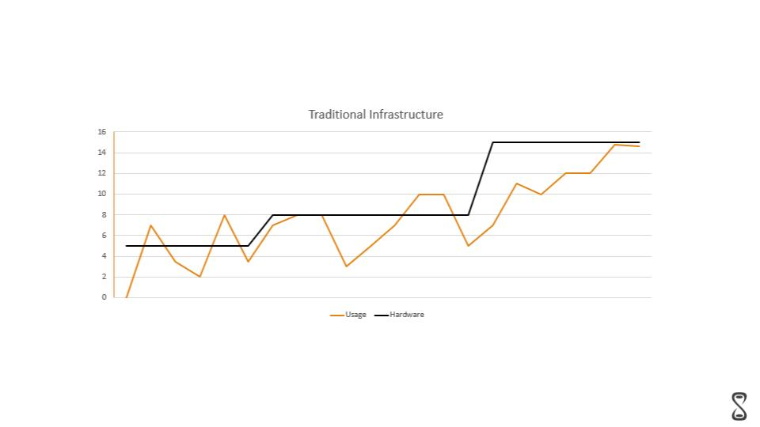
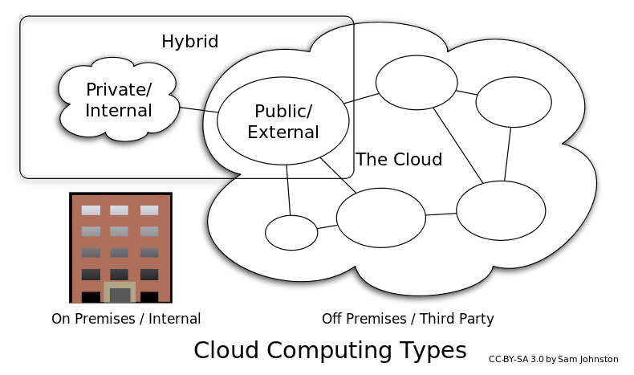

AWS Intro Session¶
In this session we are going to discuss about AWS and its basic services and use cases
Links¶
What is Cloud Computing ?¶
Cloud computing is shared pools of configurable computer system resources and higher-level services that can be rapidly provisioned with minimal management effort, often over the Internet. wiki
Six benefits of moving to AWS cloud¶
Trade capital expense for variable expense¶
Instead of having to invest heavily in data centers and servers before you know how you’re going to use them, you can pay only when you consume computing resources, and pay only for how much you consume.
Benefit from massive economies of scale¶
By using cloud computing, you can achieve a lower variable cost than you can get on your own. Because usage from hundreds of thousands of customers is aggregated in the cloud, providers such as AWS can achieve higher economies of scale, which translates into lower pay as-you-go prices.
Stop guessing about capacity¶
Eliminate guessing on your infrastructure capacity needs. When you make a capacity decision prior to deploying an application, you often end up either sitting on expensive idle resources or dealing with limited capacity. With cloud computing, these problems go away. You can access as much or as little capacity as you need, and scale up and down as required with only a few minutes’ notice.
Increase speed and agility¶
In a cloud computing environment, new IT resources are only a click away, which means that you reduce the time to make those resources available to your developers from weeks to just minutes. This results in a dramatic increase in agility for the organization, since the cost and time it takes to experiment and develop is significantly lower.
Stop spending money running and maintaining data centers¶
Focus on projects that differentiate your business, not the infrastructure. Cloud computing lets you focus on your own customers, rather than on the heavy lifting of racking, stacking, and powering servers.
Go global in minutes¶
Easily deploy your application in multiple regions around the world with just a few clicks. This means you can provide lower latency and a better experience for your customers at minimal cost.
Scaling Infrastructure¶
Traditional Infrastructure¶
 Traditional Infrastructure is not scale able at all, You can surely provision more and more servers to your data center but its really hard to estimate the server required for a healthy infrastructure. even if you are able to estimate your usage you would end up with a lot of un utilized resources in your data center
AWS Infrastructure with auto scaling¶
 AWS Infrastructure helps you slace in and scale out your servers based on the triggers you specify. In this way you can always provision the right amount of servers to keep your application cool and your customers happy. But getting to this point requires a lot of effort in terms of decoupling your server code and running it in stateless fashion.
AWS Infrastructure helps you slace in and scale out your servers based on the triggers you specify. In this way you can always provision the right amount of servers to keep your application cool and your customers happy. But getting to this point requires a lot of effort in terms of decoupling your server code and running it in stateless fashion.
Cloud Computing Service Models¶
IASS¶
"Infrastructure as a service" (IaaS) refers to online services that provide high-level APIs used to dereference various low-level details of underlying network infrastructure like physical computing resources, location, data partitioning, scaling, security, backup etc. A hypervisor, such as Xen, Oracle VirtualBox, Oracle VM, KVM, VMware ESX/ESXi, or Hyper-V, LXD, runs the virtual machines as guests.
PAAS¶
PaaS vendors offer a development environment to application developers. The provider typically develops toolkit and standards for development and channels for distribution and payment. In the PaaS models, cloud providers deliver a computing platform, typically including operating system, programming-language execution environment, database, and web server. Application developers can develop and run their software solutions on a cloud platform without the cost and complexity of buying and managing the underlying hardware and software layers.
SAAS¶
In the software as a service (SaaS) model, users gain access to application software and databases. Cloud providers manage the infrastructure and platforms that run the applications. SaaS is sometimes referred to as "on-demand software" and is usually priced on a pay-per-use basis or using a subscription fee.[69] In the SaaS model, cloud providers install and operate application software in the cloud and cloud users access the software from cloud clients. Cloud users do not manage the cloud infrastructure and platform where the application runs. This eliminates the need to install and run the application on the cloud user's own computers, which simplifies maintenance and support.
MBAAS¶
In the mobile "backend" as a service (m) model, also known as backend as a service (BaaS), web app and mobile app developers are provided with a way to link their applications to cloud storage and cloud computing services with application programming interfaces (APIs) exposed to their applications and custom software development kits (SDKs). Services include user management, push notifications, integration with social networking services and more.
FAAS¶
Serverless computing is a cloud computing code execution model in which the cloud provider fully manages starting and stopping virtual machines as necessary to serve requests, and requests are billed by an abstract measure of the resources required to satisfy the request, rather than per virtual machine, per hour. Despite the name, it does not actually involve running code without servers. Serverless computing is so named because the business or person that owns the system does not have to purchase, rent or provision servers or virtual machines for the back-end code to run on.
Cloud Computing Deployment Models¶

Private cloud¶
Private cloud is cloud infrastructure operated solely for a single organization, whether managed internally or by a third party, and hosted either internally or externally. Undertaking a private cloud project requires significant engagement to virtualize the business environment, and requires the organization to reevaluate decisions about existing resources. It can improve business, but every step in the project raises security issues that must be addressed to prevent serious vulnerabilities. Self-run data centers are generally capital intensive.
Public cloud¶
A cloud is called a "public cloud" when the services are rendered over a network that is open for public use. Public cloud services may be free. Technically there may be little or no difference between public and private cloud architecture, however, security consideration may be substantially different for services (applications, storage, and other resources) that are made available by a service provider for a public audience and when communication is effected over a non-trusted network. Generally, public cloud service providers like Amazon Web Services (AWS), Oracle, Microsoft and Google own and operate the infrastructure at their data center and access is generally via the Internet.
Hybrid cloud¶
Hybrid cloud is a composition of two or more clouds (private, community or public) that remain distinct entities but are bound together, offering the benefits of multiple deployment models. Hybrid cloud can also mean the ability to connect collocation, managed and/or dedicated services with cloud resources. Gartner defines a hybrid cloud service as a cloud computing service that is composed of some combination of private, public and community cloud services, from different service providers. A hybrid cloud service crosses isolation and provider boundaries so that it can't be simply put in one category of private, public, or community cloud service. It allows one to extend either the capacity or the capability of a cloud service, by aggregation, integration or customization with another cloud service.
Why Choose AWS?¶
AWS pace of innovation¶

AWS Global Infrastructure¶
 The AWS Cloud spans 55 Availability Zones within 18 geographic Regions and 1 Local Region around the world, with announced plans for 12 more Availability Zones and four more Regions in Bahrain, Hong Kong SAR, Sweden, and a second AWS GovCloud Region in the US.
The AWS Cloud spans 55 Availability Zones within 18 geographic Regions and 1 Local Region around the world, with announced plans for 12 more Availability Zones and four more Regions in Bahrain, Hong Kong SAR, Sweden, and a second AWS GovCloud Region in the US.
High Availability Through Multiple Availability Zones¶
Unlike virtually every other technology infrastructure provider, each AWS Region has multiple Availability Zones and data centers. As we’ve learned from running the leading cloud infrastructure technology platform since 2006, customers who care about the availability and performance of their applications want to deploy these applications across multiple Availability Zones in the same region for fault tolerance and low latency. Availability Zones are connected to each other with fast, private fiber-optic networking, enabling you to easily architect applications that automatically fail-over between Availability Zones without interruption.
Improving Continuity With Replication Between Regions¶
In addition to replicating applications and data across multiple data centers in the same Region using Availability Zones, you can also choose to increase redundancy and fault tolerance further by replicating data between geographic Regions. You can do so using both private, high speed networking and public internet connections to provide an additional layer of business continuity, or to provide low latency access across the globe.
Meeting Compliance and Data Residency Requirements¶
You retain complete control and ownership over the region in which your data is physically located, making it easy to meet regional compliance and data residency requirements.
Geographic Expansion¶
The AWS Cloud has announced plans to expand with 12 new Availability Zones in four new geographic Regions: Bahrain, Hong Kong SAR, Sweden, and a second AWS GovCloud Region in the US.
Scripts for STS¶
Installing Nginx¶
sudo amazon-linux-extras install -y nginx1.12
sudo systemctl start nginx
sudo systemctl restart nginx
sudo nano /etc/nginx/nginx.conf
Nginx Config¶
server {
listen 80;
server_name tutorial;
location / {
proxy_set_header X-Real-IP $remote_addr;
proxy_set_header Host $http_host;
proxy_pass http://127.0.0.1:3000;
}
}
Installing Apache¶
sudo yum -y install httpd
sudo service httpd start
sudo systemctl restart httpd
sudo nano /etc/httpd/conf/httpd.conf
Apache Config¶
<VirtualHost *:80>
ServerName errbit.ourcompany.com
ProxyPreserveHost On
ProxyPass / http://localhost:3000/
ProxyPassReverse / http://localhost:3000/
</VirtualHost>
Installing Node.js with NVM¶
curl -o- https://raw.githubusercontent.com/creationix/nvm/v0.33.11/install.sh | bash
. ~/.nvm/nvm.sh
nvm install node
IPTables Route¶
sudo iptables -t nat -A PREROUTING -i eth0 -p tcp --dport 80 -j REDIRECT --to-port 3000
Installing git¶
yum install git -y
git clone https://github.com/aminahmedkhan/aws-ec2-demo.git
Installing pm2¶
npm i -g pm2
pm2 start bin/www
pm2 startup
pm2 save
Kill process on port 80¶
sudo kill `sudo lsof -t -i:80`
CPU Stress¶
cat /proc/cpuinfo
yes > /dev/null &
Bootstrap script (ec2 user data script)¶
#!/bin/bash
yum install -y gcc-c++ make -y
curl -sL https://rpm.nodesource.com/setup_6.x | sudo -E bash -
yum install nodejs -y
yum install git -y
git clone https://github.com/aminahmedkhan/aws-ec2-demo.git
npm --prefix aws-ec2-demo i aws-ec2-demo
sudo node aws-ec2-demo/bin/www